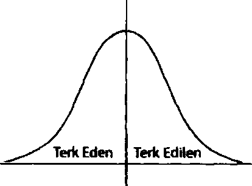
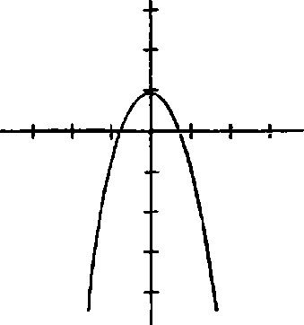

Çimenlik alan hafif meyilli bir tepenin sırtında, sanki bir anda yoktan var olmuş gibi görünen bir mezarlıkla son buldu. Dize gelen, yosun kapb taş duvarın çevrelediği aşağı yukarı kırk mezar taşı vardı. “Arşidük Franz Ferdinand’ın ebedî istirahat yeri burası,” dedi Lindsey Lee Wells farklı bir ses tonuyla; konuşmasını uzun zaman önce ezberlemiş sıkkın bir tur rehberi gibi konuşuyordu. Colin ile Hasan onun peşinden iki metrelik dikilitaşa yönelmişlerdi, önünde pek yeni durmayan, bol miktarda pembe ipek gül serili, minik bir VVashington Anıtına benziyordu. Güller alenen yapma olmalarına rağmen solmuş gibi görünüyorlardı.
Lindsey yosun tutmuş duvara oturdu. “Aman, ezberlediğim metni geçiyorum. Sen zaten onları biliyorsundur,”dedi Colinl başıyla gösterip. “Ama hikâyeyi anlatacağım: Arşidük 1863
yılının Aralık ayında Avusturya’da doğmuş. Amcası Francis Joseph imparator olmasına rağmen AvusturyaMacaristan İmparatorunun yeğeni olmak pek bir anlam ifade etmiyormuş. Tabii İmparator’un tek oğlu Rudolph kalkıp da kendisini kafasından vurmadığı sürece... ki 1889’da da tam olarak böyle olmuş. Bir anda Franz Ferdinand veliaht haline gelmiş.”
“Franz’a ‘Viyana’nın en yalnız adamı’ diyorlarmış,” dedi Colin, Hasan’a.
“Eh tabii, adam kaçık olduğundan kimse onu sevmiyormuş,”dedi Lindsey, “üstüne üstlük hiç de zeki olmayan kaçıklardanmış. Hani şu akraba evliliğinden doğmuş, kırk kiloluk çarpılardan. Ailesi liberal pısırığın teki olduğunu düşünüyormuş, Viyana sosyetesi gerizekâh olduğunu düşünüyormuş, böyle salyası filan akan türden bir aptal yani. Sonra gidip aşk evliliği yaparak işleri iyice beter etmiş. 1900 yılında Sophie diye bir kızla evlenmiş, herkes hatunun kıytınk bir kız olduğunu düşünüyormuş ama herifin gözünden bakarsak, adam hatunu hakikaten seviyormuş. Turda asla söylemiyorum ama Franz’la ilgili okuduklarıma bakılırsa sanırım Sophie’yle kraliyet tarihinin en mutlu evliliğini sürdürmüşler. Sevimli bir hikâye, tabii 28 Haziran 1914’te, on dördüncü yıldönümlerinde Saraybosna’da vurulmalarım saymazsak, imparator ikisini de Viyana’run dışına gömdürmüş. Cenazeye katılmaya bile tenezzül etmemiş. Ama anlaşılan yeğenini I. Dünya Savaşım başlatacak kadar umursuyormuş ki bir ay sonra Sırbistan’da savaş ilan etmiş.” Ayağa kalktı. “Tur bitti.” Gülümsedi. “Bahşişe hayır demem.”
Colin ve Hasan kibarca alkışladıktan sonra Colin dikilitaşın önünde durdu. Üstünde sadece şu yazıyordu: ARŞİDÜK FRANZ FERDINAND. 18631914. ÜSTÜNÜ HAFİFÇE ÖRT ONUN TOPRAK/ O SANA NİCE AĞIRUK YÜKLEMİŞ OLSA DA. Hem de ne çok ağırlık... milyonlarca. Colin uzanıp granite dokundu, sıcak güneş ışınlarına rağmen serindi. Peki Arşidük Franz Ferdinand kendisinin farklı yapacağı neler yapmıştı? Eğer aşk konusunda o kadar saplantılı olmasaydı, o kadar densiz, mızmız, kaçık olmasaydı... belki, diye düşündü Colin, bu kadar benim gibi olmasaydı...
Neticede Arşidükün iki sorunu vardı: onu zerre kadar umursayan kimse yoktu (en azından cesedi bir savaş başlatana kadar) ve günün birinde tam ortasından bir parça kopmuştu.
Fakat Colin artık kendi deliğini dolduracak ve insanları ayağa kaldırıp onu fark etmelerini sağlayacaktı. Özel kalacak, yeteneğini anagram yapmaktan ve Latince çevirilerden daha ilginç ve önemli işler yapmak için kullanacaktı. Evet, evet işte yine o Evreka hissine kapılmıştı. Kendi geçmişini^ve Arşidükün geçmişini ve tüm o sonsuz geçmişikullanarak geleceği aydınlatacaktı.XEK Karilerine! etkileyecektiColinin dâhi olması fikrini hep sevmiştive dünyayı tüm Terk Edilenler için daha güvenli bir yer haline getirecekti. Önemli olacaktı.
Hülyalarından Hasarim, “Peki nasıl oldu da gayet has bir AvusturyalI Arşidük, Boktanşehir Tennessee'ye düştü?”'
“Satın almışız,” dedi Lindsey Lee Wells. “1921 civarında. Mezarının olduğu şatonun sahibi paraya ihtiyaç duyduğu için satışa çıkarmış. Biz de almışız.”
“O günlerde ölü bir Arşidük kaça gidiyormuş?” diye sordu Hasan.
“Aşağı yukarı üç bin beş yüz papel.”
“Çok para,” dedi Colin hâlâ granit dikilitaşı tutarken. “1920 senesiyle şimdi arasında doların değeri en az on kat arttı yani bu bugünün parasıyla otuz beş bin dolar eder. On bir dolardan hesaplarsan, çok tur demek.”
Lindsey Lee Wells gözlerini devirdi. “İyi be tamam... Yeterince etkilendim. Bu kadar yeter. Hani sizin oralarda var mı bilmiyorum ama bizim burada bazı aletler var, biz hesap makinesi diyoruz, tüm o hesaplan senin yerine yapıyorlar yani.” “Kimseyi etkilemeye çalışmıyordum,” dedi Colin kendini savunurcasına.
Tam o anda Lindsey’nin gözleri parladı ve ellerini ağzına huni gibi götürüp, “Hey!” diye bağırdı. Uç erkek ve bir kız tepeden yukan çıkıyordu, sadece kafalan görünüyordu. “Okuldan çocuklar,” diye açıklama yaptı. “Ve erkek arkadaşım.” lindsey Lee Wells onlara doğru koşmaya başladı. Hasan ile Colin oldukları yerde kalıp hızla konuşmaya haşladılar.
Hasan atıldı: “Ben Kuveytliyim, öğrenci değişim programıyla geldim, babam petrol kralı.”
Colin başını iki yana salladı. “Olmaz, çok bariz. Ben Ispanyolum. Mülteciyim. Annemle babam Bask ayrılıkçılar tarafından kadedildi.”
“Bask bir insan mı yoksa bir nesne mi bilmiyorum, onlar da bilmeyecektir, o yüzden olmaz. Tamam tamam, ben Amerika’ya Honduras’tan daha yeni geldim. Adım Miguel.
Annemle babam muz ticaretiyle zengin oldu, sen de benim korumanısın çünkü muz işçileri sendikası beni öldürmek istiyor.” Colin hızla karşılık verdi: “Bu gayet iyi ama İspanyolca bilmiyorsun.Peki,beni Yukon Bölgesinde Eskimolar kaçırdı... yok bu boktan. Biz Amerika’yı ilk kez ziyarete gelmiş Fransız kuzenleriz. Lise mezuniyet gezisine çıktık.”
“Çok sıkıcı ama vaktimiz kalmadı. İngilizce konuşan ben mi olayım?” diye sordu Hasan.
“İyi, tamam.” Artık Colin sohbet eden grubun sesini duyabiliyor ve Lindsey Lee Wells’in uzun boylu, kaslı, Tennessee Titans formah bir çocuğa baktığım görebiliyordu. Çocuk dik saçlar, tamamen üst diş ve diş etlerinden oluşan bir gülümseme ve şişkin kas yığınlarından ibaretti. Oynayacakları oyunun başarısı Lindsey’nin Colin ve Hasan’dan bahsetmemiş olmasından geçiyordu ama Lindsey çocuğa büyülenmiş gibi baktığından Colin böyle bir ihtimal olduğunu sanmıyordu.
“Tamam, geliyorlar,” dedi Hasan. “Adın ne?”
“Pierre.”
“Peki. Benimki Salinger, Şalinjee diye okunuyor.”
“Tura gelmişsiniz,” dedi Lindsey’nin erkek arkadaşı. “Evet. Ben Salinjee,” dedi Hasan, aksam harika olmasa da gideri vardı. “Bu kuzenim Pierre. Ülkenize ilk kez geldik, Arşidükü görmek istedik, o, nasıl diyorsunuz, ilk dünya savaşımızı başlattı.” Colin bir an Lindsey Lee Wells’e baktı, gülümsemesini çiğnediği portakalh çikletle saklıyordu.
“Ben Colin,” dedi erkek arkadaşı elini uzatarak. Hasan uzanıp Pierre/Colin’e, “Onun ismi Öteki Colin olsun,” diye
fısıldadı. Sonra yüksek sesle devam etti: “Kuzenim, çok az İngilizce konuşur. Ben ona çevirme yapıyorum.” Öteki Colin güldü, diğer iki oğlan da gülüp kendilerini Chase ve Fulton olarak tanıttılar. (“Chase’e Dar Kot Pantolon, Fulton’a da Tütün Çiğneyen Bodur diyelim,” diye fısıldadı Hasan.)
“Je m'afpelle Pierre,” dedi Colin oğlanlar kendilerini tanıttıktan sonra. aQuand je vais dans le metro, je fais aussi de la musique de prouts”22
“Buraya çok yabancı turist gelir,” dedi Lindsey’nin yanındaki uzun boyu ve dar atletiyle baştan ayağa Abercrombie modeli gibi görünen kız. Kızın aynı zamandakibar bir şekilde söylemek gerekirsedevasa portakalları vardı. Sahiden güzeldi; beyazlatılmış dişli anoreksi hastası popüler kız tarzı güzellerdendi ki Colinın en sevmediği güzellik türü de buydu. “Ben Katrina bu arada,” dedi. Olmadı, diye düşündü Colin, belki bir dahaki sefere.
“'Amouraime aimeramouıl”23 dedi Colin hayli yüksek sesle. “Pierre,” dedi Hasan. “Konuşma hastalığı var. Şeyle, kötü kelimelerle. Biz Fransa’da Tourettes diyoruz. Siz nasıl diyorsunuz bilmiyorum.”
“Tourette sendromu mu var?” diye sordu Katrina. “MERDET24 diye haykırdı Colin.
22 “Adım Pierre. Metroya gittiğimde osurarak müzik de yaparım.”
23 “Sevgi sevgiyi sevmeyi sever.” James Joyce’un tflysses’inden Fransızcaya çevrilmiş bir alıntı.
24 “Hasiktir!”
“Evet,” dedi Hasan heyecanla. “İki dilde de aynı, hemoroit gibi. Bunu dün öğrendik çünkü Pierre’in poposunda alev vardı. Hem Tourettes. Hem hemoroit. Ama iyi çocuk.”
“Ne dis pas quej’ai des hemorrcâdes!Je naipas d’hemorroide^5 diye bağırdı Colin bir yandan oyunu sürdürüp bir yandan Hasan’ı başka bir konuya yönlendirmeye çakşırken.
Hasan, Colin’e bakıp anlayışla başım salladı, sonra Katrinaya döndü. “Demin dedi ki yüzün hemoroit gibi güzelmiş.” Bunun üstüne Lindsey Lee Wells kahkahayı bastı. “Tamam, tamam, yeter.”
Colin, Hasana döndü. “Neden hemoroit dedin ki? Aklına nasd oldu da böyle bir fikir gelebildi acaba?” Böylece Öteki Colin (ÖC), Dar Kot Pantolon (DKP) ve Tütün Çiğneyen Bodur (TÇB) ile Katrina hep bir ağızdan konuşmaya, gülüp Lindsey 'ye soru sormaya başladılar.
“Babam geçen sene Fransa’ya gitti, dostum,” diye açıklamaya girişti Hasan. “Hemoroiti yüzünden poposunu gösterip ateş kelimesinin Fransızcasını tekrarlayıp durmuş, en sonunda iki (filde de hemoroitin aynı olduğu ortaya çıkmış. Ben de soktuğumun Fransızcasında başka kelime bilmiyorum. Hem senin hem Tourette’li hem de hemoroitli olman harbiden komik.”
“Neyse ne,” dedi Colin kıpkırmızı bir suratla. Sonra ÖC lin, “Komikmiş. Hollis onlara bayılmıştır şimdi kesin,” dediğini duydu. Lindsey gülüp onu öpmek için parmak uçlarında yükseldi. “Sen benimsin, seni kandırdım ya bana yeter,” deyince 25
25 “Hemoroitim olduğunu söyleme! Hemoroitim yok!”
ÖC, “Asıl onlar beni kandırdı,” diye karşılık verdi, Lindsey dudak bükme taklidi yaptı ve ÖC eğilip alnını öptü, Lindsey neşelendi. Benzer bir sahne Colin’in hayatında da oynanıp durmuştu... ancak dudak bükme taklidi yapan genelde Colindi.
Tarladan hep beraber geri dönerlerken Colinın terli tişörtü sırtına yapışıyor, gözü hâlâ zonkluyordu. Katherine Öngörülebilirliği Teoremi, diye düşündü. İsmi bile doğru gibi geliyordu. Bu buluş için çok uzun süre beklemiş, defalarca ümidini yitirmişti; tek istediği bir kalem ve birkaç kâğıt ve bir hesap makinesi ve kısa süreliğine tek başına kalabileceği sessiz bir ortamdı. Araba işine gelirdi. Colin, Hasan’ın tişörtünü hafifçe çekiştirip anlamlı anlamlı baktı.
“Bir Gatorade almam lazım,” diye karşılık verdi Hasan. “Sonra gideriz.”
“Senin için dükkânı açmam lazım o zaman,” dedi Lindsey. ÖC’e döndü. “Benimle gelsene tatlım.” Sesindeki o vıcık vıcık tatlılık Colirie K19u hatırlatmıştı.
“Gelirdim,” dedi ÖC,“ama Hollis basamaklarda oturuyordu. Chase’le işte olmamız lazımdı da kaçtık.” ÖC onu havaya kaldırıp sıkınca kasları şişti. Lindsey biraz kıvrandı fakat açık dudaklarıyla onu uzun uzun öptü. Sonra ÖC onu yere bıraktı, göz kırptı ve maiyetindekilerle kırmızı pikaba yöneldi.
Lindsey, Hasan ve Colin, Gutshot Markete döndüklerinde pembe çiçekli elbise giymiş şişman bir kadın kahverengi, çalı gibi sakalı olan bir adamla basamaklara oturmuş sohbet ediyordu. Colin yaklaştıkça kadının hikâye anlattığını duydu.
“Staraes çıkmış çimleri biçiyordu,” diyordu kadın. “Çim biçme aletini kapatıp bana şöyle bir baktı, biraz durup düşündü sonra dönüp, ‘Hollis! O köpeğin nesi var öyle?’ dedi, ben de ona köpeğin makatında iltihaplı bezeler vardı da iltihabı akıttım, dedim, Stames biraz düşünüp taşındı sonunda şey dedi, . ‘Kalkıp köpeği vursan, iltihapsız normal olanından alsan ne kaybedersin, hiç.’ Ben de ona dedim ki, ‘Stames, bu kasabada sevilecek herif yok, ben de köpeğimi sevmişim çok mu?”’ Sakallı adam kahkahaya boğuldu, öykücü de Lindsey’ye baktı.
“Tura mı çıktın?” diye sordu Hollis. Lindsey başıyla onaylayınca Hollis devam etti. “Eh, hiç aceleye getirmemişsin.”
“Kusura bakma,” diye mırıldandı Lindsey. Oğlanları gösterdi. “Hollis, bu Hasan, bu da Colin. Çocuklar, bu Hollis.”
“Lindsey’nin annesi de derler,” diye açıklama yaptı Hollis.
“Aman be Hollis. Hava atmasan da olur,” dedi Lindsey. Annesinin yanından geçti, dükkânın kilidini açtı ve herkes buz gibi klimalı ortama girdi. Colin yanından geçerken Hollis elini omzuna koyarak Colinl çevirip yüzüne baktı.
“Seni tanıyorum,” dedi.
“Ben sizi tanımıyorum,” diye karşılık verdi Colin, sonra açıklama yaparcasına ekledi: “Simaları unutmam.” Hollis Wells ona bakmaya devam etti fakat Colin tanışmadıklarına emindi.
“Bunu laf olsun diye söylemiyor,” dedi Hasan çizgi roman rafinın arkasından kafasını uzatırken. “Buraya gazete gönderiyorlar mı?” Lindsey tezgâhın ardından USA Today çıkardı. Hasan ilk birkaç sayfayı çevirdikten sonra gür saçlı, gözlüklü
bir erkeğin ufak, siyah beyaz fotoğrafı üstte kalacak şekilde gazeteyi kadadı. “Bu adamı tanıyor musun?” diye sordu.
Colin gazeteye gözlerini kısarak bakıp bir an düşündü. “Onunla tanışmadım ama adı Gil Stabel, Fortiscom diye bir şirketin CEO su.”
“Tebrik ederim. Fakat kendisi Fortiscom’un CEO’su değil.”
“Evet, öyle,” dedi Colin kendinden hayli emin bir tavırla.
“Hayır, değil. Hiçbir şeyin CEO’su değil. Ölmüş.” Hasan gazeteyi açınca Colin eğilip altındaki yazıyı okudu: FORTİSCOM CEO’SU UÇAK KAZASINDA ÖLDÜ.
“GençBeyinler*? diye haykırdı Hollis zafer kazanmışçasına.
Colin fal taşı gibi açılmış gözlerle kafasını kaldırdı. İç geçirdi. O programı kimse izlememişti ki. Reytingi sıfırdı. Program sadece bir sezon yayınlanmış ve Şikago’nun üç milyon sakininden tek bir kişi bile onu tanımamıştı. Fakat Gutshot, Tennessee ye gelmişlerdi ve işte...
“Aman Tanrım!” diye bağırdı Hollis. “Sen burada ne arıyorsun?”
Ünlülük hissiyle bir an yanaldan kızaran Colin düşündü. “Balatayı sıyırdım; sonra yolculuğa çıkalım dedik; sonra Arşidük tabelasını gördük; sonra kafamı yardım; sonra Evreka anı yaşadım; sonra onun arkadaşlarıyla tanıştık; arabaya dönmek üzereydik, ama henüz gitmedik.”
Hollis dibine kadar gelip bandajı inceledi. Gülümsedi, kendisi sanki Colinln halasıymış da Colin yedi yaşındaki bir çocuk olarak son derece sevimli bir şey yapmış gibi onun kabank saçlanm karıştırdı. “Henüz gitmiyorsunuz,” dedi, “çünkü size yemek yapacağım.”
Hasan ellerini çırptı. “ Gerçekten acıkmıştım.”
“Sen dükkânı kapa, Linds.” Lindsey gözlerini devirip yavaş adımlarla kasanın arkasından çıktı. “Kaybolmasın diye Colirile gidersin,”diye devam etti Hollis. “Ben de... Adın neydi?” “Terörist değilim,” dedi Hasan cevap niyetine.
Hollis gülümsedi. “İçime su serptin.”
Hollis yeni ve şaşırtıcı derecede pembe bir pikap kullanıyordu, Colin yanında Lindsey yle birlikte Cenaze Arabasıyla takip ediyordu. “Güzel arabaymış,” dedi Lindsey dalga geçercesine.
Colin karşılık vermedi. Lindsey Lee Wells iyiydi hoştu ama ara sıra onu küplere bindirmeye çalışıyormuş gibi davranıyordu.26 Hasan la da aynı sorunu vardı. “Biz Pierre ve Salinger ymişiz gibi davranırken bir şey söylemediğin için sağ ol.”
“Eğlenceliydi işte. Hem Colin pislik yaptığı için biraz burnunun sürtmesi gerekiyordu.”
“Hımm iyi,” dedi Colin, söyleyecek bir şeyi olmadığında söylemesi gerektiğini öğrendiği şekilde.
“Sen bir dâhisin yani, öyle mi?”
“Hapı yutmuş bir üstünzekâlı çocuktum,” dedi Colin. “Her şeyi biliyor olman dışında hangi konularda iyisin?”
26 Colirîin annesi sinirlendirmeyi hep böyle betimliyordu İd bu Colin'e hiçbir zaman anlamlı gelmemişti.
“Şey, diller. Kelime oyunları. Tırı vırı bilgiler. Yararlı şeyler değil.”
Lindsey’nin kendisine baktığım hissediyordu. “Diller yararlı. Hangi dili biliyorsun?”
“On bir dil biliyorum. Almanca, Fransızca, Latince, Yunanca, Felemenkçe, Arapça, İspanyolca, Rusça...”
“Tamam tamam anladım,”diye lafım böldü Lindsey. “Bence metne Mutter denkt, dafi sie gutfür mich sind,”27 dedi. “O yüzden bu arabada birlikteyiz.” uWarum denkt sie das?”28
“Tamam, ikimiz de Almanca konuşabildiğimizi kanıtladık. Hatun üniversiteye gideyim de ne bileyim doktor filan olayım diye tepemden inmiyor. Ama ben gitmiyorum. Burada kalacağım. Çoktan kararımı verdim. O yüzden bana ilham vermeni filan istiyor olabilir.”
“Doktorlar eğitim gören paramediklerden daha çok para kazanıyorlar,” dedi Colin.
“Evet ama paraya ihtiyacım yok.” Duraksadı, araba altlarında homurdanıyordu. Sonunda Colin ona baktı. “Hayatıma ihtiyacım var,” dedi açıklamasına, “ki o da gayet güzel ve burada. Her neyse, zaten Hollis çenesini kapasın diye Bradford’daki meslek yüksek okuluna gidebilirim ama yapıp yapacağım o kadar.” Yol sağa keskin bir viraj yaptı ve bir dizi ağacın ardından kasaba göründü. Küçük ama bakımlı evler yolun iki kenarına
27 “Annem bana yararlı olacağını düşünüyor.”
28 “Neden öyle düşünüyor ki?”
dizilmişti. Hepsinin verandası var gibiydi ve hava cehennem gibi sıcak olmasına rağmen pek çok insan dışarıda oturuyordu. Colin ana caddede bir benzinci/hamburgerci kırması, bir kuaför salonu ve yoldan bakınca genişçe bir gardırop gibi duran bir postane olduğunu gördü. Lindsey, Colin’in penceresinden dışarıyı işaret etti. “Fabrika da şurada,” deyince Colin ilerideki alçak bina kompleksini fark etti. Fabrikaya benzemiyordu; göğe uzanan çelik silolar veya karbon monoksit püskürten bacalar yoktu, sadece hayal meyal uçak hangarlarım hatırlatan birkaç bina vardı o kadar.
“Ne üretiyor?” diye sordu Colin.
“îş. Kasabanın tüm iyi işlerini orası üretiyor. Büyük büyükbabam 1917de kurmuş.” Colin, Lindsey’yle fabrikaya bakarken arkadan gelen cip onu geçebilsin diye yavaşlayıp kenara çekti.
“iyi de orada ne üretiliyor?1’ diye sordu.
“Söylersem gülersin.”
“Gülmem.”
“Yemin et,” dedi Lindsey.
“Yemin ederim.”
“Fabrika dokuma fabrikası. Bugünlerde en çok tampon ipi yapıyoruz.”
Colin gülmedi. Onun yerine düşündü: Tamponların ipi mi varmış? Niye ki? Evrenin tüm o büyük gizemleri arasından —Tanrı, hayatın anlamı vs.— hakkında en az bilgiye sahip olduğu şey tamponlardı. Coline göre tamponlar bozayılar gibiydi: Varlıklarından haberdardı ancak doğada bir tane bile görmemişti ve özel olarak görmeye hevesli değildi.
Kahkaha atmak yerine delirtmez bir sessizliğe gömülmüştü. Hollis’in pembe pikabım yeni döşenmiş dik bir sokakta yukarı doğru takip ettiğinden Cenaze Arabası’nın yaşlı motorları can havliyle devirleniyordu. Tepeyi tırmanırken sokağın aslında uzun bir garaj yolu olduğu ortaya çıktı; yol Colinin gördüğü en büyük evle son buluyordu. Ayrıca ev âdeta çilekli sakız gibi cart pembeydi. Colin kenara çekti. Ağa bir karış açık halde bakarken Lindsey kolunu hafifçe dürttü. Sanki utanmışçasına omuz silkip, “Çok bir şey değil işte,” dedi. “Alta üstü ev.”
Geniş bir merdiven, sütunlu bir verandaya çıkıyordu. Hollis kapıyı açınca Colin ile Hasan birbirlerine değmeden yatabilecekleri kadar geniş bir kanepenin de olduğu devasa salona adım attılar. “Siz rahatınıza bakın. Biz Lindsey’yle yemek hazırlayacağız.”
“Sen o işi kendi başına halledebilirsin,” dedi Lindsey kapıya dayanarak.
“Muhtemelen halledebilirim ama hallet- meyeceğim.”
Hasan kanepeye oturdu. “Hollis var ya, çok âlemmiş. Buraya gelirken bana tampon ipi üreten bir fabrikası olduğundan bahsetti.” Colin hâlâ bu konuyu komik bulmuyordu.
“Hani şu Jayne Mansfield var ya,” dedi Colin, “aktris olan. O pembe bir malikânede yaşıyordu.” Salonda dolanarak Hollis’in kitap sırtlarım okuyup çerçeveli fotoğraflara baktı. Şöminenin üstündeki rafta duran fotoğraf gözüne takılınca ona yaklaştı. Biraz daha genç, biraz daha ince bir Hollis, Niagara Şelalelerinin önünde duruyordu. Ardında Lindsey Lee Wells’i andıran bir kız dikiliyordu fakat kızın üstünde eskimiş
bir Blink182 tişörtü ile siyah bir trençkot vardı. Çektiği kalın göz kaleminin kuyrukları bir hayli uzundu, yırtık ve dar bir siyah kot giymişti ve Doc Martens botları pırıl pınldı. “Kız kardeşi mi var?” diye sordu Colin.
“Ne?”
“Lindsey’nin,” diye açıkladı Colin. “Gelip baksana.”
Hasan yanma gitti ve konuşmadan önce biraz fotoğrafı inceledi. “Hayatımda gördüğüm en rezil gotik olma teşebbüsü. Gotik tipler Blink182 sevmez İd. Yani bunu ben bile biliyorum.”
Lindsey, “Şey, taze fasulye sever misiniz?” diye sorunca Colin bir anda onun arkalarında olduğunu fark etti.
“Bu kız kardeşin mi?” diye sordu.
“Eee, hayır,” dedi Lindsey. “Tek çocuğum. Tapılacak kadar bencil oluşumdan bunu anlayamamış miydin?”
“Tapılacak kadar bencil olmakla meşgul olduğundan fark edememiş,” diye araya girdi Hasan.
“Peki bu kim?” diye sordu Colin, Lindsey’ye.
“Orta üçteki halim.”
“Ya,” dediler Colin ve Hasan aynı anda utançla. “Evet, taze fasulye severim,” diye devam etti Hasan olabildiğince hızlı bir şekilde konuyu değiştirmeye çalışarak. Lindsey arkasından mutfak kapışım çekti ve Hasan, Coline bakıp omuz silktikten sonra kanepeye döndü.
“Çalışmam lazım,” dedi Colin. Pembe bir koridordan geçtikten sonra içinde devasa bir ahşap masa bulunan, ancak bir devlet başkanının bir yasa tasarısını onaylayabileceği türde
bir odaya girdi. Oturup cebinden kırık 2B kalemini ve hep yanında taşıdığı defterini çıkarıp karalamaya başladı.
Teorem, dünyada tam tamına iki tür insan olduğuna dair köklü geçmişe sahip argümanımın geçerliliğine dayanıyor: Bu iki tür insan Terk Edenler ve Terk Edilenler.: Herkes ya biri ya da öteki olmaya yakın ancak tüm insanlar TAM ANLAMIYLA Terk Eden veya Terk Edilen değil. Bu yüzden çan eğrisi söz konusu:

îmanların büyük kısmı dik çizginin yakınlarına düşüyor, uç değerlerse (örn, ben) bütünün küçük bir yüzdesini oluşturuyor. Grafik sayısal olarak ifade edilirse 5 aşın Terk Eden, 0 ben olabilirim. Dolayısıyla Muhteşem Katherine 4 ise ve ben 0 isem, toplam Terk Eden/Terk Edilen farkı =4. (Terk Edilen tarafa yakın olan erkekse negatif, kadınsa pozitif)
Sonra Colin, Muhteşem Katherine’le ilişkisini (aşklarının en basitim) olduğa gibinahoş, vahşi ve kısabetimleyebilecek ve grafiğini çizebileceği bir denklem bulmaya çalıştı.
Nedense denklemleri birbiri ardına kenara attıkça oda ısımyormuş gibi gelmeye başlamıştı. Gözünün üstündeki gazlı bez terden sırılsıklam olunca çekip çıkardı. Tişörtünü çıkarıp
yüzünden hâlâ akan kanı sildi. Belden yukarısı çıplak, masaya kapanmış halde çakşırken cıkz sırtında tek tek omurları sayıkyordu. Daha önce hiç böyle hissetmemişti; özgün bir konsept yakalamaya çok yakın gibi. Terk Eden/Terk Edilen dikotomisini Colin dâhil olmak üzere pek çok insan fark etmişti. Ancak kimse bunu romantik ilişkilerin takip ettiği yayı göstermek için kullanmamıştı. Herhangi bir insanın ilişkilerin yükselişi ile çöküşünü tahmin edebilecek tek bir evrensel formül hayal ettiğinden bile şüpheliydi. Kolay olmayacağım biliyordu. Her şeyden önce, konseptleri rakamlara dökmek alışık olmadığı bir tür anagram yapımına benziyordu. Ama kendine güveni tamdı. Matematiği hiç iyi olmamıştı,29 fakat lanet olsun ki terk edilmek konusunda dünya çapında üne sahip bir uzmandı.
Büyük ve önemli bir şey yakalamak üzere olduğu hissinin sarhoşluğuyla formüle odaklandı. Colin önemli olduğunu kanıtladığında Katherine onu özleyecekti, biliyordu. Onu ilk başta olduğu gibi görecekti; bir dâhi gibi.
Bir saat içinde bir formül elde etti:
f(x) = D3x2D
ki bu I. Katherine'i şöyle gösteriyordu:
29 Gerçi pek çok insandan daha iyi olduğu kesindi.

Bu neredeyse mükemmel sayılırdı... Karmaşık olmayan bir ilişkinin karmaşık olmayan grafik tasviri. İlişkinin özlüğünü bile yakalamıştı. Grafikler zamanı kesin olarak belirtmek zorunda değildi; sadece kıyaslama yaparak uzunluk fikri vermeleri yeterliydi, örn., benimle K14’ten daha uzun süre çıkacak ama K19 kadar uzun çıkmayacak.30
Ama II. Katilerine tamamen yanlış çıktı; doğru, x eksenini sadece bir kere kesiyordu. Belli ki formül matematik camiasını ayağa kaldırabilecek kadar incelikli değildi fakat Colin tekrar tişörtünü giyecek kadar iyi hissediyordu. En azından son iki gün olduğundan daha mutlu hissederek koridordan hızla geçip salonun serinliğine dalınca bir eşikten Lindsey, Hasan ve Hollis’in yemek odasmda oturduğunu gördü. İçeri girip bir
30 Buıada söz konusu olan matematiğin daha detaylı açıklaması gerçekten sıkıcı ve hakikaten uzun olacaktı. Kitapların çok uzun ve çok sıkıcı şeyler için özel olarak tasarlanmış bir kısmı var ve o kısma “Ekler” ismi veriliyor ki burada kullanılan matematiğin daha detaylı açıklamasını da tam olarak orada bulmak mümkün. Hikâyenin kendisine gelince: Daha fazla matematik olmayacak. Hem de hiç. Söz.
tabak pilav, taze fasulye ve gerçekten ufak tavuklara benzeyen şeylerle dolu bir tabağın önüne oturdu.
Hasan bir şeye gülüyordu, iki Wells kadını da öyle. Daha şimdiden ona bayılmışlardı, insanlar Hasan’ı fastfood ve ünlüleri sever gibi severdi. Colinln hayret verici bulduğu bir nitelikti.
Colin oturduğu gibi Hollis, Hasana, “Dua etmek ister misin?” diye sordu.
“Tabü.” Hasan boğazım temizledi. “Bismillah,” dedikten sonra çatalım eline aldı.
“Bu kadar mı?” diye sordu Hollis merakla.
“Bu kadar. Net insanlarız. Net ve aç.”
Sanki Arapça herkesi rahatsız etmiş gibi birkaç dakika boyunca Hasan dışında kimse konuşmadı, o da bıldırcının (demek minik tavuklar değil, bıldırcındılar) müthiş olduğunu söyleyip duruyordu... ki ara sıra kıymık kadar et parçası bulmak uğruna kemik ve kıkırdaktan oluşan sonsuz bir labirentte kazı yapmaktan keyif alınıyorsa güzel sayılabilirdi ancak. Colin yenilebilecek kısınılan bulmak için çatal bıçağıyla ava çıktı ve sonunda bir bütün et parçası yakaladı. Tadım çıkarabilmek için yavaşça çiğnemeye başladı, çiğnedi, çiğnedi... ah. Hay lanet. Bu ne be? Çiğnedi. Çiğnedi. Çiğnedi. Ve yine. Sokayım. Kemik mi bu? “Ah,” dedi kısık sesle.
“Saçma,” dedi Lindsey.
“Saçma mı?”
“Saçma,” diye onayladı Hollis.
“Kuş saçmayla mı avlanmıştı?” diye sordu Colin küçük metal saçmayı tükürürken.
Aynen.
“Yani ben mermi mi yiyorum?”
Lindsey gülümsedi. “Hayır. Mermileri tükürüyorsun.” Bunun üstüne Colin o akşam temel olarak pirinç ve taze fasulyeyle akşam yemeği faslını kapadı. Herkes bitirdikten sonra Hollis, “Genç Beyinleri kazanınca nasıl hissettin?” diye sordu. “O kadar da, şey, heyecanlı görünmediğini hatırlıyorum.” “Diğer çocuğun kaybetmesine üzülmüştüm. Gerçekten iyi kızdı. Onun için hayli zor oldu.”
“Ben ikimiz adına da yeterince sevindim,” dedi Hasan. “Stüdyodaki seyirciler arasında sevinçten oynayan tek kişi bendim. Singleton o kızı fena tokatladıydı.”31
Genç Beyinler, Colin’e XIX. Katherine’i hatırlatıyordu, o da dümdüz ileri bakıp olabildiğince az şey düşünmeye çalıştı. Hollis konuştuğunda tıpkı alarm saati gibi, uzun süreli bir sessizliği bölmüş gibi oldu. “Bence bu yaz Gutshot’ta benim için çalışın. Bir projeye başlıyorum ve iş tam size göre.”
Yıllar içinde insanların Colini yeteneklerine uygun işlerde çalıştırmak istediği zamanlar olmuştu. Ama (a) yaz aylan daha fâzla şey öğrenebilsin diye zeki çocuk kamplarına ayrılmıştı ve (b) hakiki bir meslek onu, hakiki işe sahip daha da büyük bir bilgi havuzu haline gelmekten alıkoyardı ve (c) Colinin aslında pek de kolay pazarlanabilen becerileri yoktu. Mesela insan nadiren şöyle bir ilana denk geliyordu:
31 Tokatlamıştı, demek istedi Colin. Ama dil bilgisi ilginç değildi.
Dâhiler aranıyor!
Devasa şirketimizin heyecan verici, dinamik Deha Departmanınayaz dönemi için yetenekli ve hevesli bir dâhi arıyoruz, istenilen özellikler: en az on dört yıllık sertifikalı üstünzekâlı çocuk olma deneyimi, anagramyapma konusunda uzmanlık (ve kıvrak aliterasyon yeteneği), akut olarak on bir dil konuşabilme. îş tanımında okumak; ansiklopedi, roman ve şiirleri hatırlamak;pi sayısının ilk doksan dokuz basamağını ezberlemek32 bulunmaktadır.
Böylece Colin her yaz zeki çocuk kampına gitmiş ve her geçen yılla birlikte herhangi bir şey yapabilecek yeteneğe sahip olmadığı fikrine giderek daha fazla kani olmuştu ki Hollis Wells’e de bunu söyledi.
“Tek ihtiyacım olan şey makul derecede zeki olman ve Gutshot’lı olmaman, ikiniz de bu tanıma uyuyorsunuz, ikinize
32 Ki Colin, her kelimenin ilk harfinin, pi sayısının bir basamağına karşılık geldiği 99 kelimelik bir cümle oluşturarak bunu on yaşında başarmıştı (a = 1, b = 2, vs.; ı = 0). Eğer merak ediyorsanız cümle şöyleydi:
Cins alabalıkların çoğu aslmda dayanıklı, hareketli balıklardır; esasen dertleri coşkun denizlere geçerek hoplamaktır fakat haliyle, cinslerinin bu ceremeli, gayeli çabası, erkeklerini bayağı etkilemektedir çünkü canhıraş cebelleşmenin getirdiği cümbüş, balıklarla fingirdeşmelerine hazır, dopdolu ırmakları beraberinde getirir; gençlerin çırpındığı apaçık havzaları, fütursuzca atlayıp eğlenen hayvanların ciddiyetsiz hareketlerini, heyecanla coşan fakat denize açılma ısrarında dalga geçmeyen balıkların ısrarım haksızca filme çeken hayâsızlar çoktur çünkü deniz heveslileri burada canlanıp, ıslak fakat görkemli adaleleriyle esrikçe çiftleşir; ırkın erkekleri bundan gayrı ebleh bakışlar, ışıltılı gözler, halsiz hareketlerle gezecek, etraftaki başka, gözleri ışıklı cahil çapsızlara gösteri babında dolanacaktır; cinslerinin çekilmez boyutu, aynen âdemoğullannın fevri, ısrarcı ergenlerininkinden farksızdır.
de haftada beş yüz dolar, ayrıca yemek ve yatacak yer. İş sizin! Gutshot Tekstil ailesine hoş geldiniz!”
Colin bıldırcını elleriyle zarifçe tutmuş, dişinin kovuğunu bile doldurmayacak bir lokma için kemiği beyhude yere dişleyen arkadaşına baktı. Hasan bıldırcını dikkatle tabağına koyduktan sonra Colinln bakışlarına karşılık verdi.
Sonra başıyla çok hafif onayladı; Colinln dudakları büzüldü; Hasan iki günlük kirli sakalını sıvazladı; Colin başparmağının içini kemirdi; Hasan gülümsedi; Colin başıyla onayladı.
“Peki,” dedi Colin sonunda. Kalmaya karar vermişlerdi. İster beğen ister beğenme, diye düşündü Colin, yol maceraları da bir yerde son bulur. En azından onun tarzındaki yol maceraları her zaman sonlanacaktı. Ve burası gayet hoş bir varış noktasıydı... Hiç nefes aldırmadan pembe olmasına rağmen tadı bir yaşam alanı; hayli hoş insanlar ki aralarından biri onu hafiften ünlü gibi hissettiriyordu; bir de ilk Evrekasımn evi. Colin in paraya ihtiyacı yoktu fakat Hasanın, ailesinden para dilenmekten ne kadar nefret ettiğini biliyordu. Ayrıca bir iş ikisinin de işine gelirdi. Colin daha önce ikisinin de teknik olarak para için çalışmadığını fark etmişti. Tek endişesi Teorem’di.
Hasan, “La urid en uzice rahatek.... velakin min ajlkhamsu miet dolar emrikifil esbu. savfa afaal.ni3 33
33 “Yol maceram mahvetmek istemiyorum ama haftada beş yüz dolara ben varım”
“La urid u an akhsere kula vakti min acli vazifa. Yecib en aştegil ala mesalet alriyadiyat.”34
“Singleton’ın çiziktirecek vakti olur, değil mi?” diye sordu Hasan İngilizce.
“O nece be, kuş dili mi?” diye araya girdi Lindsey kuşkulanarak.
Colin onu umursamayıp Hasana İngilizce karşılık verdi. “Yaptığım şey çiziktirmek değil ama tabii bilmemen doğal çünkü henüz...”
“Üniversiteye gitmedim, evet. Hiç yaratıcı değilsin,” dedi Hasan. Sonra Lindsey ye döndü. “Kuş dili falan konuşmuyoruz. Kuran’ın kutsal dilini, büyük halifelerin ve Selahaddinln dilini, tüm dillerin en güzeli, en detaylısını konuşuyoruz.”
“Boğazım temizleyen rakun sesine benziyor,” dedi Lindsey. Colin bunu düşünmek için bir an duraksadı.
Sonra, “Çalışmak için vakte ihtiyacım var,” dediğinde Hollis başıyla onaylamakla yetindi.
“Müthiş,” dedi Lindsey içten görünen bir tavırla. “Müthiş. Ama benim odama yerleşemezsiniz.”
Ağzı yan yanya pilav dolu Hasan, “Bu evde sığışabileceğimiz bir köşe buluruz herhalde,” dedi.
Bir süre sonra Hollis, “Scrabble oynayalım,” diye önerince Lindsey homurdandı.
“Ben hiç oynamadım,” dedi Colin.
34 “Yol macerası zaten sıkın sayılırdı ama işin vaktimi almasını istemiyorum. Teorem’i halletmem lazım*
“Daha önce hiç Scrabble oynamamış dâhi mi olur?” diye sordu Lindsey.
“Ben dâhi değilim.”
“İyi be. Ukala o zaman.”
Colin güldü. Bu söz ona uyuyordu. Artık üstünzekâh değildi, henüz dâhi olmamıştı... ama hâlâ ukalaydı. “Ben oyun oynamam,” dedi Colin. “Yani genel olarak oynamam.”
“Oynaşana. Oyun oynamak güzel bir şey. Gerçi Scrabble oyun deyince akla gelen ilk seçenek olmuyor,” dedi Lindsey.
Skor:
Hollis: 158 Colin: 521 Lindsey: 293 Hasan: O35
Annesiyle babasını arayıp Gutshot diye bir kasabada olduğunu söyleyen ancak yabancıların evinde kaldığında hiç değinmeyen Colinin geç saate kadar Teorem üstünde çalıştığı yeni yatak odası ikinci kattaydı ve odada boş çekmeceleri olan hoş bir meşe masa vardı. Colin nedense boş çekmeceli masaları hep sevmişti. Fakat Teorem’in gidişatı iyi değildi; tam bu iş için yeterli derecede matematik uzmanlığına sahip olmadığından
35 “Singleton'la Scrabble filan oynamam ben. Ne kadar salak olduğumu hatırlamak isteseydim gidip üniversite giriş sınavımın sözel bölüm sonuçlarına bakardım zaten.”
endişelenmeye başlamıştı ki başını kaldırdığında kapının açıldığını gördü. Lindsey Lee Wells şal desenli pijama giymişti.
“Başın nasıl?” diye sordu yatağa otururken.
Colin sağ gözünü kapadı, açtı, bir parmağını kesiğe bastırdı. “Acıyor,” diye karşılık verdi. “Tedavi için sağ ol tabii.”
Bağdaş kurup gülümsedi. “Arkadaşlar bugünler içindir.” Fakat sonra ciddileşti, âdeta utangaçlaşmıştı. “Şey sana bir şey söyleyebilir miyim?” Başparmağının içini kemirdi.
“Aa, aynısını ben de yapıyorum,” dedi Colin eliyle işaret edip.
“Gerçekten mi? Tuhafmış. Parmak emmenin kötü taklidi gibi bir şey. Her neyse, ben de hep tek başımayken yapıyorum zaten,” dedi Lindsey ve Colin onun yanında olmasının “tek başınalık” olmadığını düşündü ama üstüne düşmedi. “Neyse, şey, biraz tuhaf gelebilir ama benim salağın teki olduğumu düşünme diye o fotoğrafla ilgili açıklama yapmaya geldim. Yatakta yatarken benim ne kadar salak olduğumu düşünebileceğin aklıma geldi, Hasanla benim hakkımda filan konuşuyor olabileceğinizi düşündüm.”
“Peki,” dedi ancak Hasanla konuşacak başka bir sürü konuları vardı.
“Neyse, şey, çirkindim de... Hani hiç şişman olmadım, tel takmadım, sivilcem filan yoktu ama çirkindim. Çirkinmiş, güzelmiş bunlar nasıl belirleniyor bilmiyorum gerçekten, belki soyunma odasmda buluşup kimin çirkin, kimin güzel olduğuna karar veren gizli bir erkek grubu filan vardır çünkü hatırlayabildiğim kadarıyla ilkokul dörtte güzel olan kimse yoktu.”
“I. Katherine’le tanışmamışsın,” diye araya girdi Colin.
“Öykülerin birinci kuralı: Lafa karışmak yok. Ama çok komik, sem sapık. Her neyse, kısacası çirkindim. Hep benimle uğraşıyorlardı. Ne kadar kötü olduğuyla ilgili hikâyeler anlatıp seni sıkmayı düşünmüyorum ama bayağı kötüydü. Çok mutsuzdum. Sonunda orta üçte alternatif takılmaya başladım. Hollis’le Memphis e gittik, tüm dolabımı yeniledim, saçlarımı kısa ve kat kat kestirdim, siyaha boyadım, güneşe çıkmayı filan bıraktım ve yarı emo, yan gotik, yan punkçı, yarı inek öğrenci tipindeydim. Temel olarak ne halt yediğimi ben de bilmiyordum ama hiç önemli değildi çünkü Milan, Tennessee’deki ortaokulda kimse ne emo, ne gotik, ne punkçı ne de inek öğrenci görmüştü. Farklıydım, o kadar. Ve bir sene boyunca ben onlardan nefret ettim, onlar benden nefret ettiler. Sonra lise başlayınca benden hoşlanmalarını sağlamaya karar verdim. Öylece karar verdim. O kadar basitti ki anlatamam. İnanılmaz basitti. Öyle biri haline geldim o kadar. Havalı birisiymişsin gibi takıhyorsan, öyle giysiler giyip öyle laflar ediyorsan ve havalı tiplerin yaramaz olduğu kadar sevimli de’ tarzına sahipsen havalı tiplerden oluyorsun. Ama insanlara pislik gibi davranmıyorum. Bizim okulda o tip bir popülerlik anlayışı bile yok.”
“Bu tam da popüler tiplerin söylediği türden bir laf işte,” dedi Colin.
“İyi iyi, tamam. Ama ruhunu yakışıldı tiplerle çıkıp Gutshot civarındaki en iyi içkili partilere gitmek için satan eski çirkin kızlardan değilim.” Kendini savunurcasına tekrar etti: “Ruhumu satmadım.”
“Şey peki ama zaten satsan da benim için fark etmezdi,” dedi Colin. “inekler popülerliğin umurlarında olmadığım söyleyip dururlar ama arkadaşının olmaması gerçekten kötü oluyor. Kendi adıma konuşursam şu bahsettiğin havalı tiplerden hiç hoşlanmadığımı söyleyebilirim... bence hepsi gerizekâlı. Ama ben de muhtemelen biraz onlara benziyorum. Mesela geçen gün Hasan’a önemli olmak istediğimi söylüyordum, hani hatırlanmak istediğimi filan. O da bana,‘ünlü olmak, popüler olmak demek’ dedi. Belki haklıdır, belki de ben sırf ünlü olmak istiyorumdur. Hatta daha bu akşam düşünüyordum da belld yabancıların havalı olduğumu düşünmesini istiyorumdur çünkü beni gerçekten tanıyanlar böyle olmadığımı biliyor zaten. On yaşındayken okul gezisiyle hayvanat bahçesine gitmiştik de çok çişim gelmişti. Aslında o gün birkaç kere işemem gerekmişti, muhtemelen çok su içmiştim. Aklıma gelmişken ‘günde sekiz bardak su içmek gerek’ muhabbetinin hiçbir bilimsel temeli olmadığını, tamamen yalan olduğunu biliyor muydun? Böyle bir sürü şey var. Herkes doğru olduğunu varsayıyor çünkü insanlar temelde tembel ve meraksız ki bu kelime kulağa yanlış kullanılan kelimelerden biriymiş gibi geliyor ama aslında doğru.”36 Lindsey, “Beyninin nasıl çalıştığını görmek hakikaten tuhaf,” deyince Colin iç geçirdi. Hikâye anlatamadığının farkındaydı, sürekli konuyla ilgisi olmayan detaylar ve sadece kendisinin ilginç bulduğu olayları ekleyip duruyordu. “Her neyse, olayın özü şu, bir aslan neredeyse penisimi koparıyordu. Ve demem o ki bu tip saçmalıklar hiçbir zaman popüler tiplerin başına gelmiyor. Hem de hiç.”
(36 Günde sekiz bardak konusu gerçekten böyle. Günde sekiz bardak su içmenin, özellikle suyun tadını sevmek gibi bir olayınız olmadığı sürece hiçbir anlamı yok. Pek çok uzman korkunç ciddi bir sorununuz olmadığı sürece suyuburaya özellikle dikkatsusadığınızda içmeniz gerektiği konusunda hemfikir.)
Lindsey güldü. “Nasıl anlatacağını bilsen harbiden iyi bir hikâye olurmuş.” Sonra tekrar başparmağım ısırdı. Tek başınaykenki alışkanlığı. Elinin ardından konuştu: “Ben senin hiç fena olmadığını düşünüyorum, ayrıca benim havalı olduğumu düşünmeni istiyorum, popülerliğin tüm olayı bu zaten.”
Başlangıcın Sonu
İlk öpüşmelerinden sonra Colin ile I. Katherine muhtemelen iki dakika boyunca sessizce oturdular. Katherine, Ovidius u çevirme işine devam etmeye çalışan Colinl dikkatle seyrediyordu. Fakat Colin emsalsiz bir problemle karşılaşmıştı. Odaklanamıyordu. Başını kaldırıp ona bakıp duruyordu. Ufak suratına göre fazla büyük olan kocaman mavi gözleri durmaksızın kendisine bakıyordu. Colin ona âşık olduğuna kanaat getirdi. Sonunda Katherine konuştu.
“Colin,” dedi.
“Evet, Katherine?”
“Senden ayrılıyorum.”
Elbette o esnada Colin o anın önemini tam olarak kavrayamamıştı. Kendisini Ovidius’a vermiş, sessizce kaybının matemini tutarken Katherine de sonraki yarım saat boyunca, annesiyle babası onu eve götürmek için salona gelene kadar
Colin’i seyretmişti. Fakat Muhteşem Katherine’e, Katherine Fenomeni’nin arketipi olarak nostaljik gözlerle bakabilmesi için başından birkaç Katherine daha geçmesi gerekecekti. Uç dakikalık ilişkileri kendi içinde tam bir katışıksız forma sahipti. Terk Eden ile Terk Edilen arasındaki sabit tangonun ta kendisiydi: gelmek, görmek, yenmek ve sonra eve dönmek.